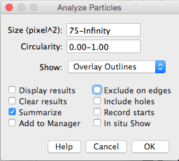

First, let's get the open image from ImageJ and split the channels into 3 separate images.
from ij import IJ, ImagePlus
from ij.measure import ResultsTable
from ij.plugin import ChannelSplitter
from ij.plugin.filter import ParticleAnalyzer
from ij.process import AutoThresholder
from java.lang import Double
# Get the currently open image
img = IJ.getImage()
# Split the channels
channels = ChannelSplitter.split(img)
ph3 = channels[0]
ki67 = channels[1]
dapi = channels[2]
dapi.show()
ki67.show()
ph3.show()
Next, let's automate the different steps in scoring the number of cell expressing different markers.
Segment the DAPI channel by threshold and run watershed to split touching cells.
dapi.getProcessor().setAutoThreshold(AutoThresholder.Method.Li)
IJ.run(dapi, "Convert to Mask", "")
IJ.run(dapi, "Watershed", "")
Segment Ki67 Channel:
ki67.getProcessor().setAutoThreshold(AutoThresholder.Method.Li)
IJ.run(ki67, "Convert to Mask", "")
Segmenting the Ph3 channel (not shown here) is the same process.
Now let's quantify the number of cells in each channel using Particle Analysis (i.e., Connected Components). To do this we use the ParticleAnalyzer plugin from ImageJ.
See if you can recognise some of the things we initiate the ParticleAnalyzer with in the dialog we used in the manual interactive procedure.

pa = ParticleAnalyzer(ParticleAnalyzer.EXCLUDE_EDGE_PARTICLES |
ParticleAnalyzer.DISPLAY_SUMMARY |
ParticleAnalyzer.SHOW_OVERLAY_OUTLINES,
ParticleAnalyzer.AREA, None, 75,
Double.POSITIVE_INFINITY)
pa.analyze(dapi)
pa = ParticleAnalyzer(ParticleAnalyzer.EXCLUDE_EDGE_PARTICLES |
ParticleAnalyzer.DISPLAY_SUMMARY |
ParticleAnalyzer.SHOW_OVERLAY_OUTLINES,
ParticleAnalyzer.AREA, None, 75,
Double.POSITIVE_INFINITY)
pa.analyze(ki67)
pa = ParticleAnalyzer(ParticleAnalyzer.EXCLUDE_EDGE_PARTICLES |
ParticleAnalyzer.DISPLAY_SUMMARY |
ParticleAnalyzer.SHOW_OVERLAY_OUTLINES,
ParticleAnalyzer.AREA, None, 75,
Double.POSITIVE_INFINITY)
pa.analyze(ph3)